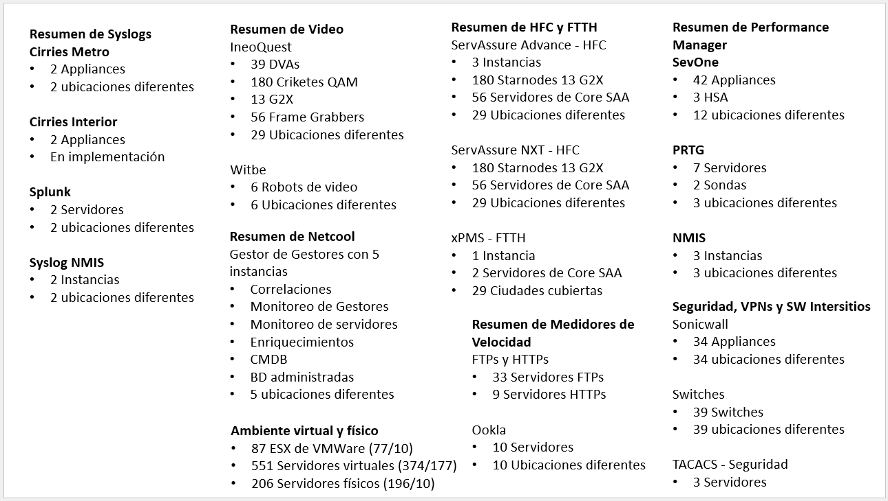
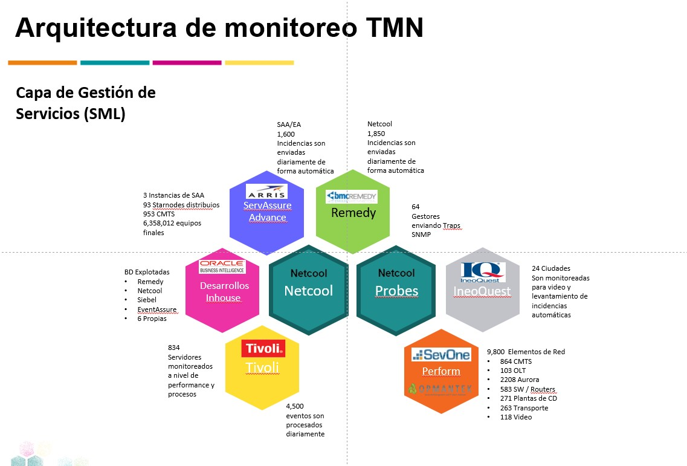
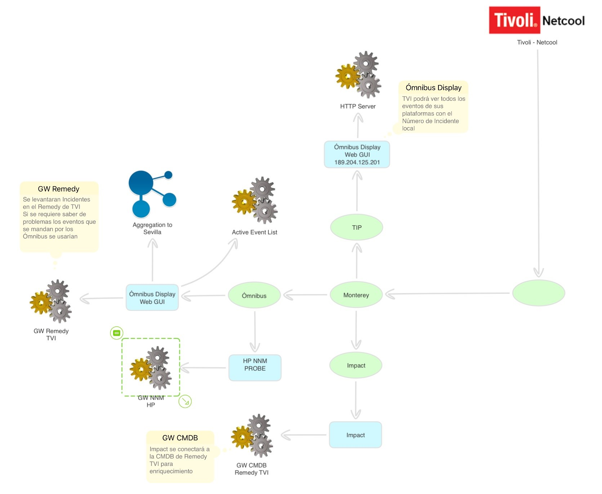

Mi ubicación
Las Américas, Ecatepec de Morelos, Estado de México, México
Portafolio
Experiencia en Desarrollo Web, Telecomunicaciones y redes, Tecnologías de la información, Implementación de soluciones de software, Recursos Humanos, Soporte Técnico, Atención a Clientes, Manejo de Personal, Monitoreo de Tecnologías, Administración de Proyectos, Diseño Web y Comercio Electrónico.
Desarrollo Web
He creado varios sitios Web que a lo largo del tiempo han
cerrado por diversas razones.
En la Confederación Nacional Campesina implemente el sitio Web para la
Confederación Nacional de Productores de Maíz de México usando en su momento
Flash y Dreamweaver.
Adicionalmente construí en sus inicios la Intranet y posteriormente la
IntraNOC que al día de hoy funciona en Izzi Telecom.
Actualmente trabajo en algunos sitios Web, esto incluye el desarrollo y
publicación del proyecto pasando por la adquisición del dominio y hosting.
Sitios creados:
Uso de diferentes metodologias para la creación de Sitios Web como uso de soluciones propies para eCommerce, Wordpress, programación directa con HTML5, CSS3 y Java Script.
- Tienda Virtual Parmeni.com
- Tienda Virtual ZyzusTitiTy-Kinder Sorpresa
- Encriptador-Desencriptador de texto - Página publicada
- Encriptador-Desencriptador de texto - Repositorio documentado en GitHub
- Curriculum Alejandro Hernández
Cursos y certificados:
- Curso de actualización en Git y GitHub por parte de Oracle-Alura.
- Curso de actualización en HTML5 y CSS3 avanzado por parte de Oracle-Alura.
- Curso de actualización en JavaScript para Font End por parte de Oracle-Alura.


Administración de Proyectos
Gerente responsable del monitoreo de las diferentes
tecnologías que se utilizan para ofrecer los servicios de Triple Play
y OTT de Izzi a nivel nacional.
Dentro de las responsabilidades que tenía, era la implementación de
diferentes aplicaciones o sistemas debiendo crear desde cero el proyecto
completo y darle seguimiento.
Utilizando para ello diferentes metodologías o marcos de trabajo como:
- Metodologías tradicionales Waterfull.
- Marcos de trabajo para metodologías agiles como Scrum o Canvan.
Debiendo adaptarme a las necesidades imperantes
a esos momentos y creando en ocasiones una mescla de metodologías para
cumplir con las espectativas.
Utilizando además diferentes aplicaciones para el seguimiento de
proyectos como:
- Microsoft Project.
- Microsoft Planner.
- Trello Planner.
- Jira Software.
Debiendo apoyarme del sistema distribuido GIT para
la organización y liberación del software así como de los repositorios
que ofrece GitHub.
Cursos de actualización y Certificados:
- Curso de actualización en administración de proyectos con metodologías agiles y Scrum.
- Curso Gestión ágil: Liderando el cambio en un ambiente de agilidad.
- Curso La empresa ágil: Introduciendo el business agility en las organizaciones.
- Curso Fundamentos de agilidad: Primeros pasos para la transformación ágil.
- Curso Organización de equipos ágiles: Las funciones existentes en un equipo.


Implementación de Aplicaciones
Responsable de la integración exitosa al monitoreo de
Cablevisión con las empresas adquiridas por Grupo Televisa, Cablemás,
Cablecom-Metro Red, Bestel, Telecable y TVI; así como de la definición de
la arquitectura para esta integración.
Responsable de la adquisición
de tecnologías, incluyendo la evaluación de software, hardware y soporte
ofrecido por los proveedores.
Y por supuesto de la implementación,
administración y mantenimiento de estas soluciones.
Soluciones implementadas:
Soluciones que fueron implementadas y liberadas a producción, previamente evaluadas mediante pruebas de concepto POC, incluidas su administración, mantenimiento y mejora continua.
 

Telecomunicaciones y redes
El conocimiento adquirido es dunte mi estancia en Izzi Telecom.
Trabajando en diferentes puntos del NOC (Network Operation Center) y durante los ítmos
15 años como Gerente de NOC - Innovación y Desarrollo, siendo responsable
del monitoreo de las diferentes tecnologías que se utilizan para
ofrecer los servicios de Triple Play y OTT de Izzi a nivel nacional.
- Responsable de la administración de 35 gestores de tecnologías relacionadas con Telecomunicaciones.
- Implementación del monitoreo de las diferentes tecnologías que integran la entrega del servicio implicando el conocimiento del funcionamiento de estas tecnologías.
Gestores que se manejaron para telecomunicaciones
- Cyan
- NCE
- MCP
- Tellabs
- TNMS
- NMF Nokia
- On Center
- One Control x 2
- IMS Netact
- PRTG
- Netnumen ZTE
- AMS Nokia
- U2000 GPON – NCE
- ZMS
- Sentry
- NCP Nokia
- OMS 1353
- ACME Packet
- Cacti
- ECI
- EXFO NQMS
- INFINERA DNA(Actualizado)
- N2000 Huawei
- NETMASTER(Actualizado)
- PNMSJ
- SOEM
- U2000 – NCE-T
- OMEA – Recuperación
- PRESIDE
- TNMS x 2
- BTI
- Solar Winds
- Turin


Monitoreo de tecnologías
Gerente responsable del monitoreo de las diferentes
tecnologías que se utilizan para ofrecer los servicios de Triple Play y
OTT de Izzi a nivel nacional.
Responsable de la integración exitosa al monitoreo de Cablevisión con
las empresas adquiridas por Grupo Televisa, Cablemás,
Cablecom-Metro Red, Bestel, Telecable y TVI; así como de la definición
de la arquitectura para esta integración.
Experiencia en Gerencia de NOC de Innovación y Desarrollo:
- Divididos en 7 equipos de trabajo:
- 1. Equipo de desarrollo. Encargado del desarrollo, implementación y liberación de soluciones de monitoreo llave en mano.
- 2. Equipo de Tivoli-Netcool. Encargado de la implmentación, administración y mantenimiento de la suite de monitoreo de IBM Tivoli-Netcool.
- 3. Equipo de Gestores. Encargado de la administración de 29 gestores para Telecomunicaciones y responsable de sus módulos de monitoreo.
- 4. Equipo de Virtualización e Infraestructura. Encarga de la implementación y mantenimiento de servidores tanto a nivel físico como virtual, así como sus interconexiones de red a niever locales y nacionales.
- 5. Equipo de SevOne. Solución para el monitoreo exclusivo de performance de equipos de red y comunicaciones; así como su correlación de eventos.
- 6. Equipo de ServAssure. Encargado de la implmentación, administración y mantenimiento de la solución de monitoreo de la red HFC y FTTH.
- 7. Equipo de Video. Encargado de la implementación, arministración y mantenimiento de la plataforma para monitoreo del video llamada IneoQuest y Witbe.
Presentación de diagramas de las soluciones de monitoreo:

Manejo de personal
Gracias a la experiencia adquirida durante mi vida laboral, puedo señalar para mi persona las siguiente Habilidades adquiridas.
Personal a cargo por gerencia:
- Responsable de 19 ingenieros a mi cargo.
Manejo de personal técnico divididos en 7 equipos de trabajo:
- 1. Equipo de desarrollo.
- 2. Equipo de Tivoli-Netcool.
- 3. Equipo de Gestores.
- 4. Equipo de Virtualización e Infraestructura.
- 5. Equipo de SevOne.
- 6. Equipo de ServAssure.
- 7. Equipo de Video.
Habilidades generales:
- Trato con proveedores
- Negociación de soportes
Cursos y certificados:
- Curso de actualización en Desarrollo Personal por parte de Oracle y Alura.
- Curso de Estrategia para actividades diarias por parte de Oracle y Alura.
- Curso Negociación y Manejo de Conflictos en el programa de desarrollo humano de Televisa.
- Cursos Trabajo en Equipo y Solución de Conflictos en el programa de desarrollo humano de Televisa.


Atención a clientes
Experiencia como jefe de NOC y Supervisor de Atención a
clientes y soporte técnico vía
telefónica; solución de problemas a clientes en diferentes sistemas operativos,
relacionados con el acceso a Internet por medio de Internet broadband además
de decodificadores digitales, asesoría en la implementación del servicio de
Internet y Capacitación al Call Center y áreas afines.
Parte de las actividades como Gerente de NOC era el presentar las soluciones
que implementariamos a nuestros clientes internos, entre los que destacan, otros
gerentes, coordinadores y directores generales.
Cursos y capacitación:
- Cursos de Calidad en el Servicio en el programa de desarrollo humano de Televisa.
- Constante capacitación en relación al servicio y atención al cliente de Izzi, manejo de personal, manejo de objeciones.